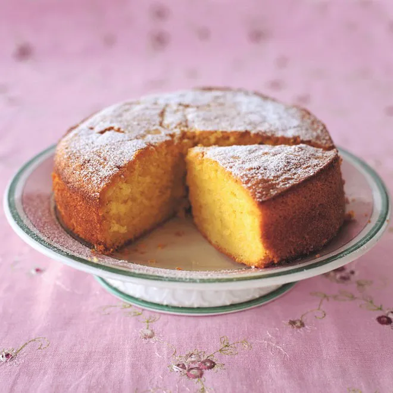

Vanilla Cake

Description
A simple vanilla cake recipe is the perfect introductory cake
for beginners, as well as a versatile standby for more
experienced bakers to have on hand. While there's a whole,
huge, hypercalorific world of complicated cakes out there to
explore, from red velvet cakes to lemon drizzle cakes, this
easy cake recipe is where it all begins and it's worth mastering
so you can get the basics of cake making under your belt before
you start to jazz it up with flavour additions and decorating
finesse.
Ingredients
- 175g (6oz) margarine or softened butter
- 175g (6oz) caster sugar
- 3 large eggs
- 175g (6oz) self-raising flour, sifted
- 1tsp baking powder
- 1tsp vanilla extract
- pinch of salt
Steps
-
Heat the oven to 180°C (gas mark 4). Lightly grease an 18cm
(7in) round cake tin with a little extra butter or margarine
and cut a piece of greaseproof paper or non-stick baking
parchment to fit the base of the tin.
-
Put all the ingredients into a large mixing bowl and beat
with a wooden spoon or a hand-held mixer for 1 minute, or
until just combined. It's important not to beat the batter
too much - just long enough to make it smooth.
-
Pour or spoon the mixture into the tin, smooth the top and
bake on the middle shelf of the oven for about 45-50 minutes.
The cake is cooked when it looks well risen and golden; the
top should spring back when lightly touched with a fingertip.
Another test is to insert a skewer into the centre of the cake
- it should come out clean.
-
Let the cake sit in the tin for 5 minutes, then gently run a
knife around the edge and turn it out onto a wire rack to cool. Serve dusted with icing sugar.
Go to the main page